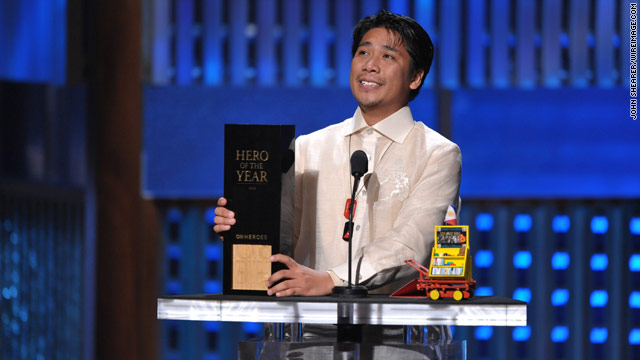
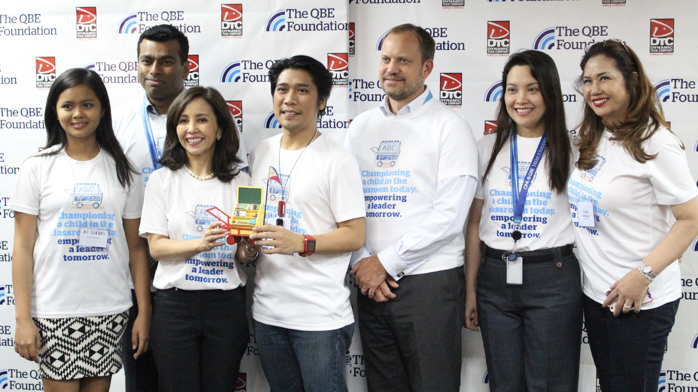

Beyond Borders: Efren Peñaflorida as CNN Hero of the Year
Written by Kyne Guzman
Revised by Sharmaine Trellier
Revised by Sharmaine Trellier

From the slums of the Philippines to the global stage, Efren Peñaflorida's journey is nothing short of awe-inspiring. As a ray of hope for underprivileged kids, Peñaflorida's unwavering dedication to education has left an indelible mark on society. Named the CNN Hero of the Year in 2009, Peñaflorida has been the driving force behind the Dynamic Teen Company (DTC). This charity has empowered over 1,800 disadvantaged youngsters with essential reading and writing skills since 1997. Peñaflorida's journey began amid poverty and hardship. Bullied as a child, he could have easily succumbed to the lure of joining gangs, a fate all too common for kids growing up in similar circumstances. However, his inner strength and determination set him on a different path. Instead of seeking vengeance, he pursued education. And his pursuit didn't stop with his personal growth. Peñaflorida looked beyond his struggles and saw the plight of many kids like him. It led to his inception of the DTC and the revolutionary idea of mobile "pushcart classrooms." This creative initiative, equipped with educational resources, took learning to the doorsteps of those who most needed it.
Peñaflorida's efforts have not gone unnoticed. In 2009, his remarkable contribution was globally recognized when he was named CNN Hero of the Year. Closer to home, the Philippine President awarded him the esteemed Order of Lakandula. The international recognition came with a $100,000 financial award, further fueled Peñaflorida's mission to empower youngsters through education. The ripple effect of Peñaflorida's work has been felt far and wide. His innovative approach to education has been replicated over 50 times by various groups across the Philippines. His story has inspired TV shows and films, spreading his message of empowerment and hope to audiences worldwide. Under Peñaflorida's visionary leadership, the DTC has dramatically broadened its scope to meet the changing needs of underprivileged youngsters. From the early days of the Kariton Klasrum program that served elementary school kids, DTC has developed a four-phase approach catering to students at various educational levels, even those starting their careers. Incorporating initiatives like the Learners' Educational Aid Program (LEAP) for high school students and the Support for Tertiary Education Program (STEP) for college-bound students, DTC has constantly evolved to stay relevant and impactful. Partnerships and collaborations have played a crucial role in DTC's journey, with the Philippine Department of Education's Alternative Learning System making it simpler for underprivileged students to receive education.

Peñaflorida's influence transcends national boundaries, with nations like Sri Lanka, Kenya, and Indonesia replicating and localizing the DTC program. His advocacy for inclusive education has reached a global audience through speaking engagements and collaborations, resulting in partnerships with groups like Golden ABC Inc., known for its support in education, environment, community development, arts, and culture. Despite his success and fame, his dedication to his mission remains undeterred. Peñaflorida's humility and relentless commitment to providing marginalized youngsters access to education testify to his character. His work exemplifies the transformative power of education and serves as a testament to the difference one dedicated individual can make in society. Ultimately, Efren Peñaflorida's story is not just about overcoming adversity. It's about turning personal pain into collective gain and using education to bring about social change, one child at a time.